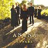

Celtic Lyrics Corner > Artists & Groups > Anúna > Cynara > An Oíche
|  | An Oíche |
| Credits : | Music by Michael McGlynn |
| Appears On : | Cynara |
| Language : | Gaeilge (Irish Gaelic) |
| Lyrics : | English Translation : |
| An cuimhin leat an oíche úd a bhí tú ag an bhfuinneog | Do you remember that night when you were at the window |
| Gan hata gan láimhne dod dhíon gan chasóg? | Without a hat or glove or overcoat on you? |
| Do shín mé mo lámh chughat 's do rug tú uirthi barróg | I gave my hand to you and you clasped it to you |
| Gan hata gan láimhne dod dhíon gan chasóg? | Without a hat or glove or overcoat on you? |
| 'Gus labhair an fhuiseog | And the lark spoke |
| A chumainn mo chroí tar oíche ghar éigin | My love, come to me some night |
| An cuimhin leat an oíche úd 'san oíche ag cur cuisne | Do you remember that night? And the night was so cold |
| Do shín mé mo lámh chughat 's do rug tú uirthi barróg | I gave my hand to you and you clasped it to you |
| Gan hata gan láimhne dod dhíon gan chasóg? | Without a hat or glove or overcoat on you? |
| 'Gus labhair an fhuiseog | And the lark spoke |
| A chumainn mo chroí tar oíche ghar éigin | My love, come to me some night |
| An cuimhin leat an oíche úd 'san oíche ag cur cuisne... | Do you remember that night? And the night was so cold... |